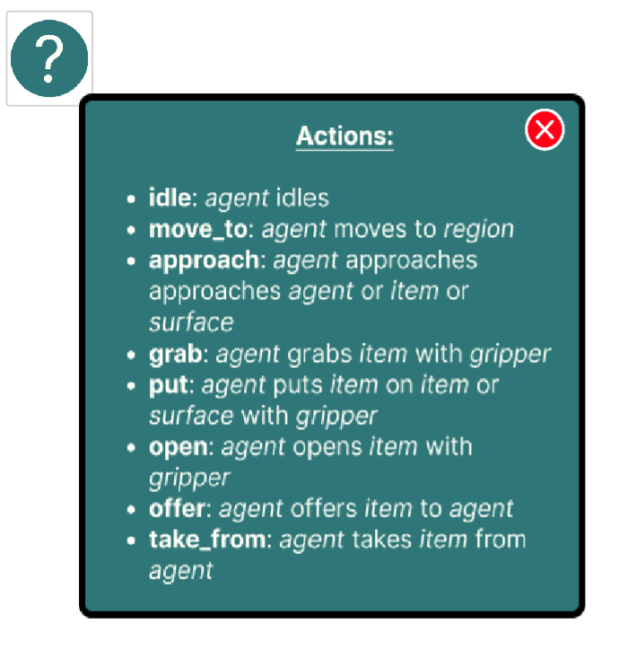

Introduction to Actions
Imagine that you are in a house with a robot named Stretch. Below is a map of the house that Stretch can move around in and the objects that it can interact with.

Now that you are familiar with Stretch's environment, let's see how you can use Polaris to give Stretch instructions using only actions.
What are Actions?
Actions are what the robot does. Sequences of actions enable the robot to achieve an objective.
You can specify the actions that you want the robot to do within each step. The robot will fill in any missing gaps in knowledge needed to do an action.
Click the video below to learn how to specify tasks to the robot with only actions! Note that the robot reads instructions from top to bottom.
Additional Information
Polaris will tell you whether or not the robot is able to perform the instructions that you provide it.
If the robot can execute your instructions, the following text will be shown.

If the robot cannot execute your instructions, the following warning sign will be shown.
You can click the help button on Polaris if you would like a full description of all of the actions.
If you are ready, click Next >> to start using Polaris!
« Previous Next »